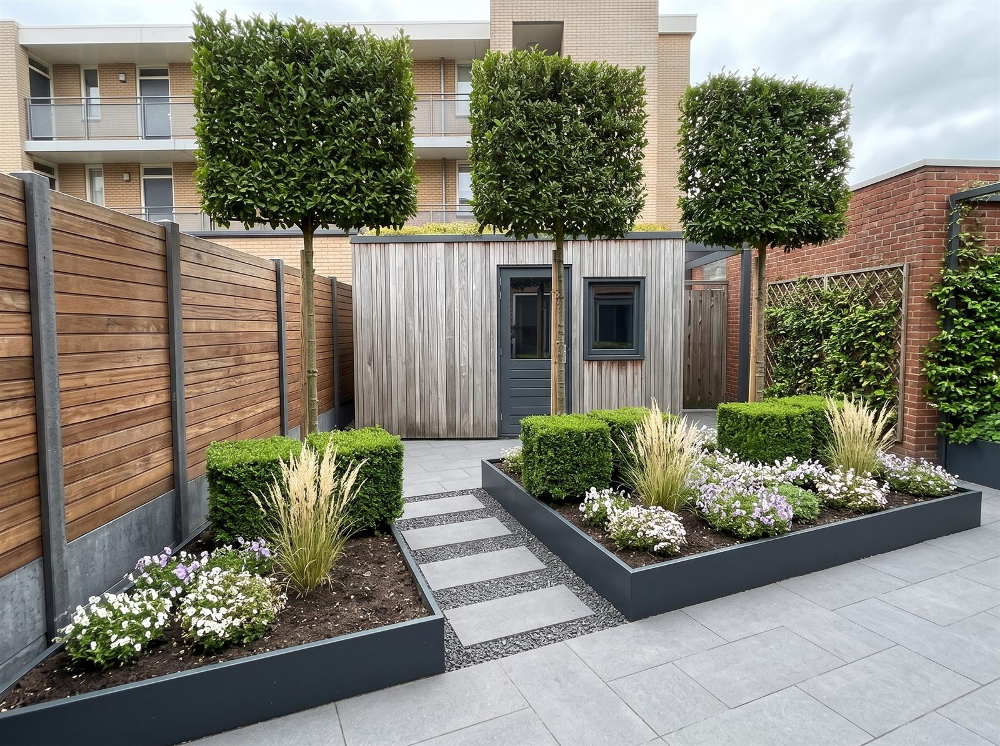
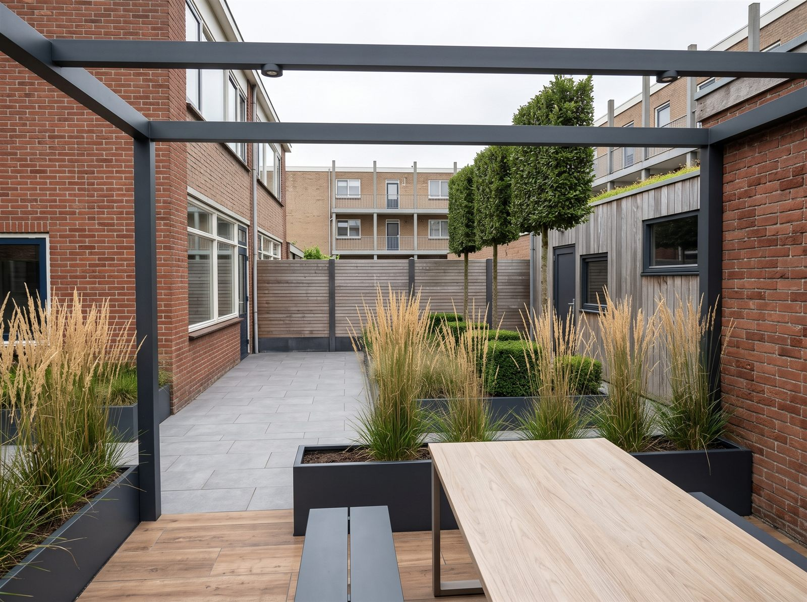
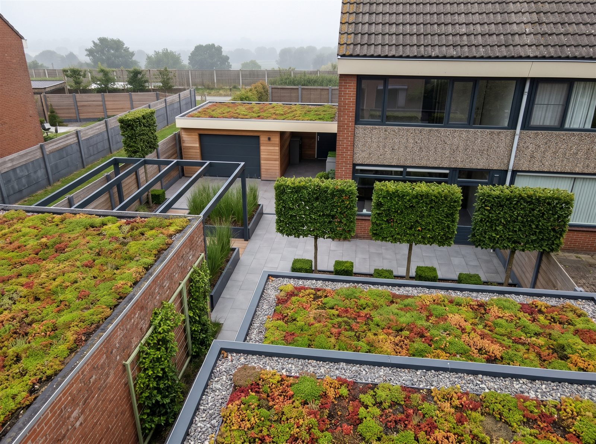
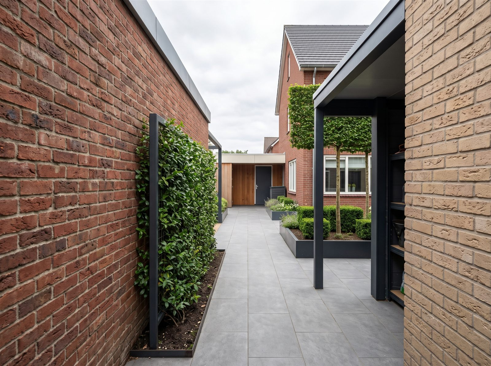

Let op: dit zijn impressies, geen ontwerptekeningen. De beelden zijn op 5 november 2026 gemaakt met het beeldprogramma Gemini (Google), op basis van schermafdrukken uit het 3D-model. Ze tonen de sfeer, de materialen en de beplanting. Maten, aantallen, plantkeuze en details kunnen afwijken. Voor de uitvoering zijn het 3D-model, de plattegrond, het legplan 40 × 80 en het ontwerpdossier leidend.

Impressie 1. Vanuit de tuindeur (D1)impressieOver het terras naar het noorden: de verhoogde border met de drie leiboomschermen, de stapstenen in antraciet split, het tegelpad en de tuinschuur. Links de westschutting, rechts het pad en de muur van de praktijkruimte.

Impressie 2. Vanaf het pergola-terrasimpressieOnder de pergola recht naar het westen, met de westschutting als eindpunt. Rechts, aan de noordzijde, de tuinschuur achter de rij leibomen; links het huis langs het terras.

Impressie 3. Vanaf de galerijimpressieSchuin van boven over de sedumdaken van de schuurtjes en de tuinschuur, met daarachter de leiboomschermen, de pergola en het bijgebouw. De achtergrond met open velden is door het beeldprogramma verzonnen.

Impressie 4. Vanaf de poortimpressieLangs het pad naar de opstelplaats en het bijgebouw. Links de muur van de praktijkruimte met het rek en de klimplant, rechts de spoelplek en de leiboomschermen.